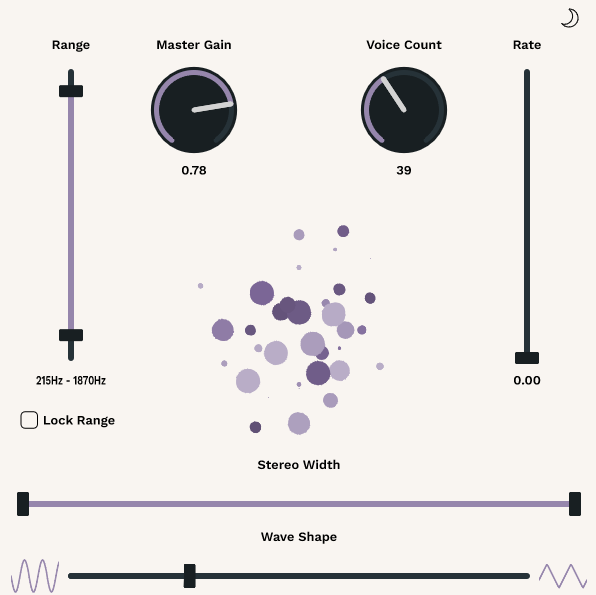
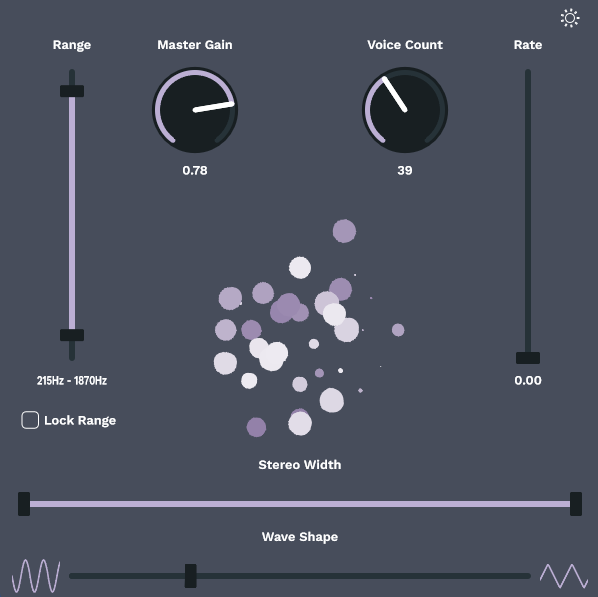

The goal of this project was to make a fun GUI display using the JUCE Framework.
The plugin is a drone synthesiser, designed to produce constant sound formed by 1-100 oscillators.
Each oscillator oscillates its volume level at a different rate. Each time that its volume fades to 0, it randomly
selects a new frequency for its tone and a new position in the stereo field. It selects these new values from ranges that
the user sets.
The user is given control for:
- Num Voices - the number of oscillators active.
- Frequency Range - this determines the range from which an oscillator will choose a new frequency (oscillators reset when their volume reaches 0)
- Lock Range - this button locks the min and max values for the frequency range together so that when you move one the other moves with it.
This allows for quick scanning around.
- LFO Rate - this increases the range of frequencies used to oscillate the volumes of each pair of oscillators. This is a range
rather than a simple scale factor, therefore even at the highest rate values, there will be some oscillators which remain slow.
- Stereo Width - this determines the range from which an oscillator will choose a new pan position from (oscillators reset when their volume reaches 0)
- Wave Shape - this determines the mix of Sine and Triangle wave that the oscillators use. (Wave Shape resets when oscillator volume reaches 0, so they will eventually all take the same value but this take time depending on the oscillators' rates) (oscillators reset when their volume reaches 0)
- Light/Dark Mode - the moon/sun icons in the top right corner toggle the UI colour theme.
The visualiser in the centre of the plugin provides a visual representation of the oscillators that are currently playing.


Each oscillator is represented by a circle in the visualiser. The diameter of the circle is determined by the oscillator's level,
the brightness of the circle is determined by the frequency of the oscillator, and the position of the circle is determined by the
stereo position of the oscillator
(the distance from the centre of the visualiser is determined by the absolute stereo
position, therefore the visualiser does not show you whether an oscillator is positioned left or right, but just gives an
idea of how wide the sound is). Finally the wave shape will change the outline of the circle, with a more jagged outline indicating more triangle wave, whilst smoother indicates more sine wave..
You can view the code and fork the repo yourself on my
GitHub.